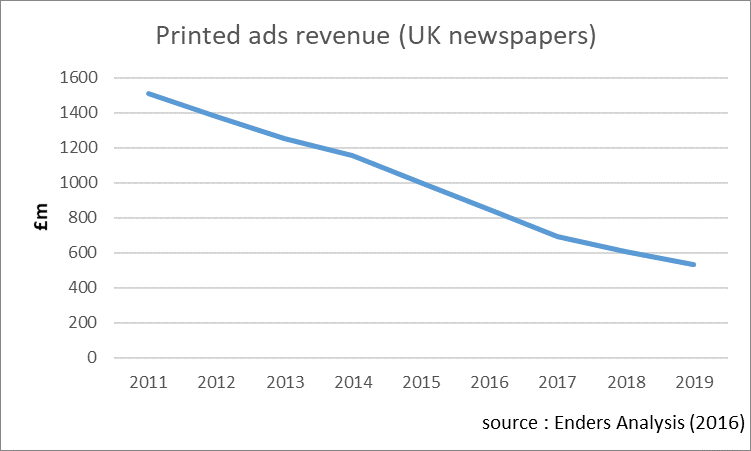
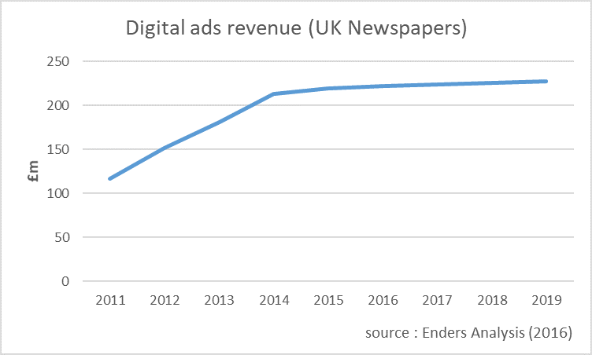
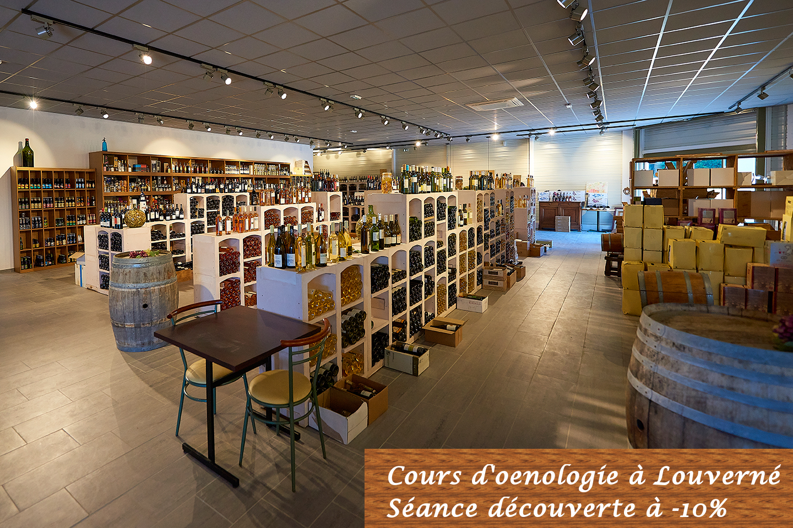
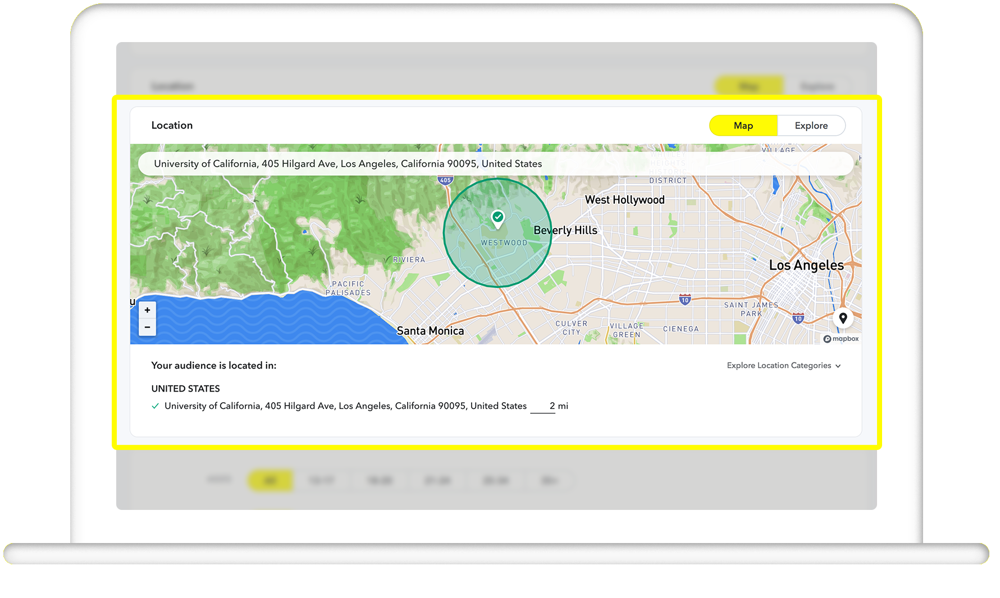
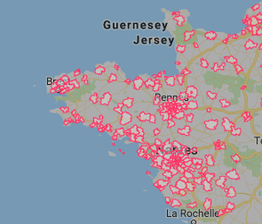
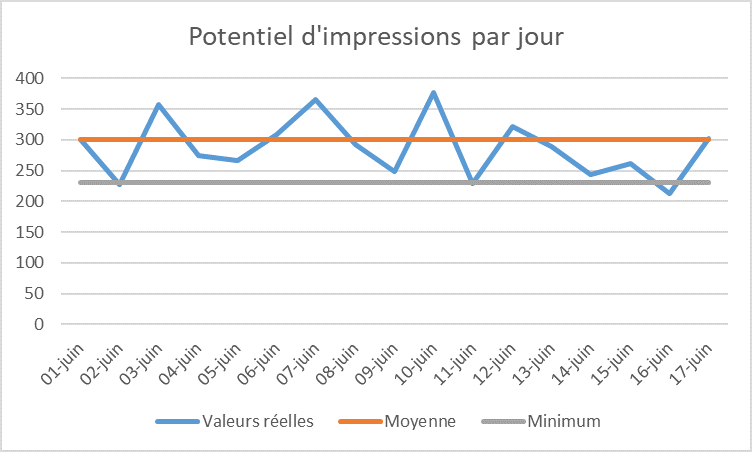
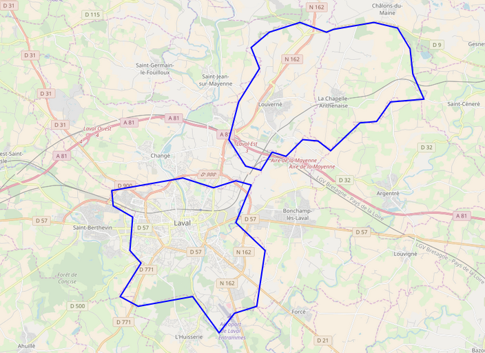
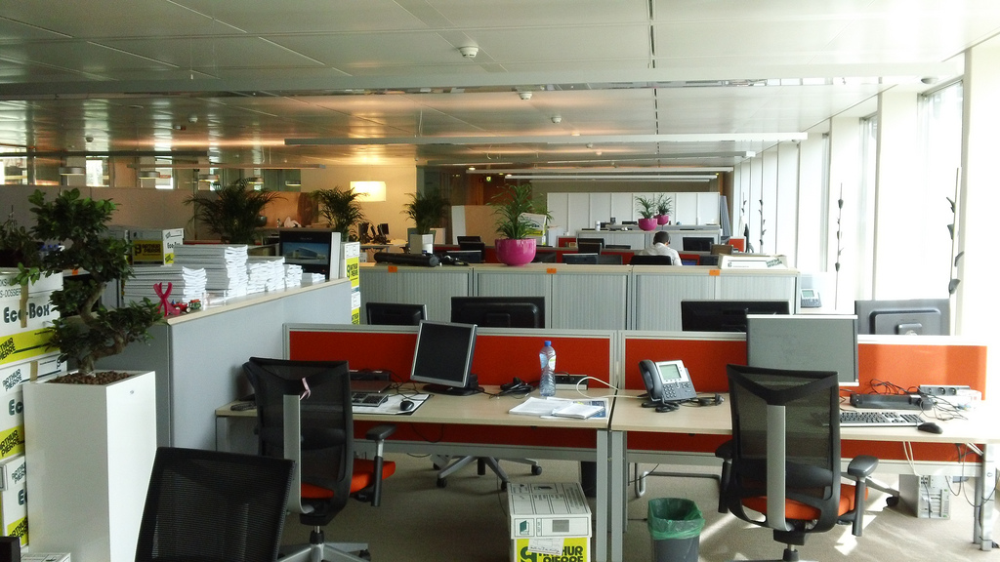
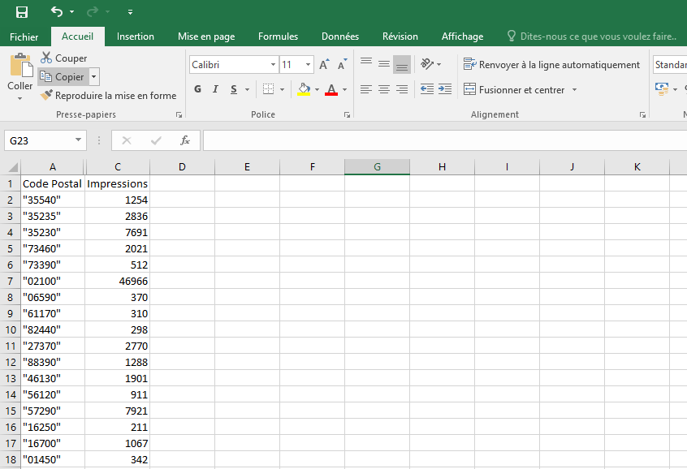

Estimation d'audiences web
🎯géolocalisées🎯
Web2Day - 13 Juin 2018
Docteur en Informatique
Data Scientist @ Ouest France Multimédia
- Machine Learning
- Segmentations
- Audits d'algos
- Data
- Temps forts
- ...
La publicité aujourd'hui
Le marché Print en crise
Marché de la publicité "Print" en baisse
Le marché Digital en croissance
Compensée en partie par la publicité en ligne
Problème
La publicité en ligne n'est pas toujours bien acceptée
Solutions ?
- Qualité
- Pertinence
- Discrétion
- Personnalisation
- Intérêts
- Géolocalisation
Un intérêt partagé
- Snapchat Radius
- Waze
- Google et plateformes RTB
Solutions pour la publicité géolocalisée
Estimation d'audience sur vos propres sites via DFP
Limitée aux grandes agglomérations.
Forecasting via AppNexus
- Machine learning
- Efficace
- Cher
Potentiels difficiles à estimer
Possible de trouver un minimum ou une valeur moyenne acceptable
Des différences importantes entre territoires
Besoin d'évaluer un potentiel d'impression par zone
Au travail !
Première étape : résumer nos idées préconçues
- On laisse la saisonnalité de côté
- On ignore les zones blanches
- Le nombre d'habitants est le principal indicateur
Deuxième étape : des données
- Campagne publicitaire sur une journée
- Période "normale"
- Plusieurs codes postaux
Troisième étape : profit ?
| Habitants | Impressions | Impressions/habitant | |
|---|---|---|---|
| Louverné | 4 163 | 420 | 0.1/hab |
| Laval | 49 848 | 29 910 | 0.6/hab |
Un modèle trop simple
D'autres différences importantes
- Tests réalisés sur une journée entière
- Importance du type et du nombre d'emplois
Nouveau modèle, nouveaux calculs

- Open Data
- Statistiques
Verdict
Marge d'erreur d'environ 10% sur les tests suivants
Then End ?
Difficile de voir la réalité du terrain
Cartographie
La boîte à outils
- Leaflet/Open Street Map
- d3.js
- @github.com/sylvaindurand/france-choropleth
Résultat
Conclusion
Au final

- Connaître et évaluer ses biais
- Keep it as simple as possible, but not simpler
- La data doit servir à penser
Merci